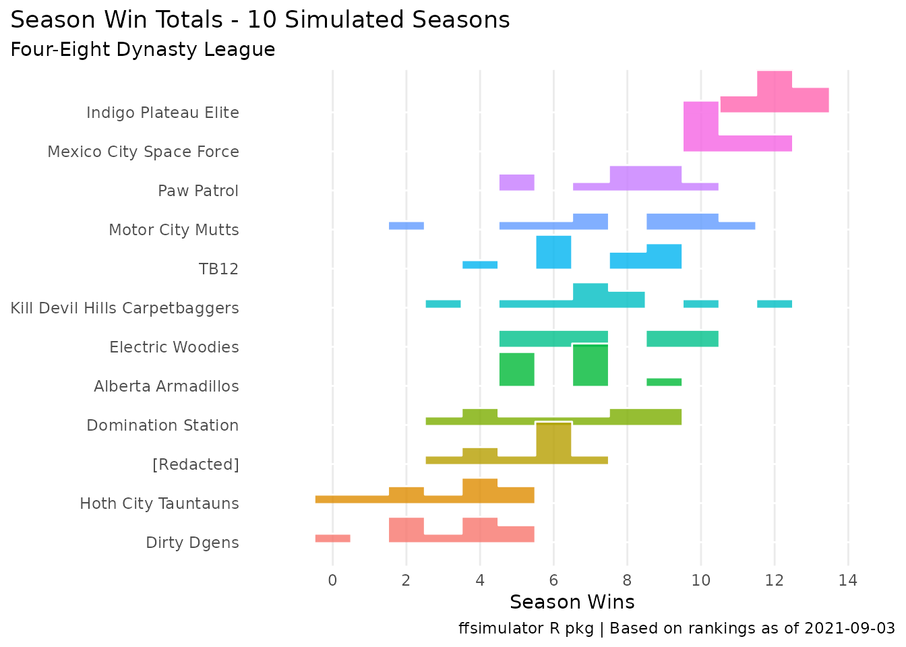
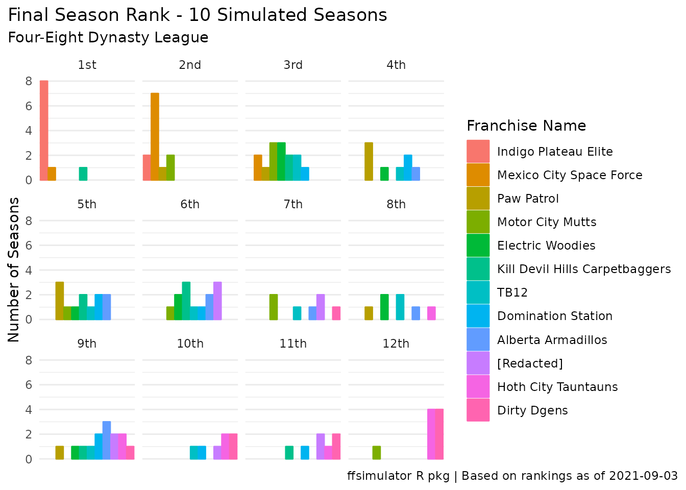
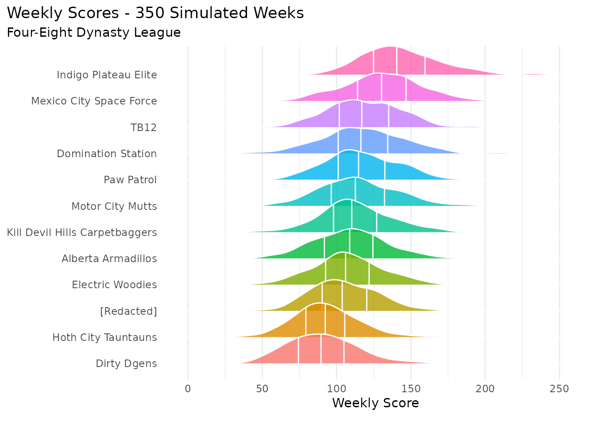

ffsimulator runs simulations on a given fantasy league based that league’s rosters, scoring settings, and current redraft rankings, connecting this data to historical weekly performances for each (preseason) positional ranking.
This vignette will introduce the basic usage of ffsimulator - you may also be interested in the motivations and custom simulations vignettes!
ffsimulator connects directly to your league (via the ffscrapr package) and can be used at a high level with just a few lines of code:
foureight_conn <- mfl_connect(2021, 22627)
foureight_sim <- ff_simulate(conn = foureight_conn, n_seasons = 25, n_weeks = 14)
foureight_sim#> <ff_simulation: 25 simulated seasons of Four-Eight Dynasty League>
#> List of 7
#> $ summary_simulation: tibble [12 × 11] (S3: tbl_df/tbl/data.frame)
#> $ summary_season : tibble [300 × 12] (S3: tbl_df/tbl/data.frame)
#> $ summary_week : tibble [4,200 × 15] (S3: tbl_df/tbl/data.frame)
#> $ roster_scores : tibble [124,600 × 23] (S3: tbl_df/tbl/data.frame)
#> $ projected_scores : tibble [124,600 × 15] (S3: tbl_df/tbl/data.frame)
#> $ league_info : tibble [1 × 14] (S3: tbl_df/tbl/data.frame)
#> $ simulation_params :List of 6
#> ..$ n_seasons : num 25
#> ..$ n_weeks : num 14
#> ..$ best_ball : logi FALSE
#> ..$ seed : NULL
#> ..$ injury_model: chr "simple"
#> ..$ base_seasons: int [1:9] 2012 2013 2014 2015 2016 2017 2018 2019 2020
#> - attr(*, "class")= chr "ff_simulation"ffsimulator includes a few automatic plots that can be run on this ff_simulation object to get a quick sense of the simulation output:
autoplot(foureight_sim) # defaults to type = "wins"
autoplot(foureight_sim, type = "rank")
autoplot(foureight_sim, type = "points")
#> Picking joint bandwidth of 6.5
You can also access the various component dataframes by name, for further analysis.
The summary_simulation table is a team-level summary across all of the simulated seasons.
foureight_sim$summary_simulation
#> # A tibble: 12 x 11
#> league_id franchise_id franchise_name seasons h2h_wins h2h_winpct
#> <chr> <chr> <chr> <int> <dbl> <dbl>
#> 1 22627 0012 Indigo Plateau Elite 25 11.2 0.803
#> 2 22627 0001 Mexico City Space Force 25 9.96 0.711
#> 3 22627 0011 TB12 25 7.96 0.569
#> 4 22627 0007 Paw Patrol 25 7.8 0.557
#> 5 22627 0008 Domination Station 25 8.32 0.594
#> 6 22627 0005 Motor City Mutts 25 6.84 0.489
#> 7 22627 0009 Kill Devil Hills Carpetba… 25 7.16 0.511
#> 8 22627 0003 Alberta Armadillos 25 6.64 0.474
#> 9 22627 0004 Electric Woodies 25 5.8 0.414
#> 10 22627 0010 [Redacted] 25 5.36 0.383
#> 11 22627 0006 Hoth City Tauntauns 25 3.76 0.269
#> 12 22627 0002 Dirty Dgens 25 3.16 0.226
#> # … with 5 more variables: allplay_wins <dbl>, allplay_winpct <dbl>,
#> # points_for <dbl>, points_against <dbl>, potential_points <dbl>The summary_season table is a season-level summary of all weeks within those seasons - any one of these seasons “could” theoretically be the outcome of the upcoming season!
foureight_sim$summary_season
#> # A tibble: 300 x 12
#> season league_id franchise_id franchise_name h2h_wins h2h_winpct allplay_wins
#> <dbl> <chr> <chr> <chr> <int> <dbl> <dbl>
#> 1 1 22627 0001 Mexico City S… 11 0.786 112
#> 2 1 22627 0002 Dirty Dgens 2 0.143 28
#> 3 1 22627 0003 Alberta Armad… 9 0.643 91
#> 4 1 22627 0004 Electric Wood… 2 0.143 48
#> 5 1 22627 0005 Motor City Mu… 8 0.571 86
#> 6 1 22627 0006 Hoth City Tau… 4 0.286 38
#> 7 1 22627 0007 Paw Patrol 9 0.643 96
#> 8 1 22627 0008 Domination St… 10 0.714 93
#> 9 1 22627 0009 Kill Devil Hi… 8 0.571 74
#> 10 1 22627 0010 [Redacted] 2 0.143 44
#> # … with 290 more rows, and 5 more variables: allplay_games <dbl>,
#> # allplay_winpct <dbl>, points_for <dbl>, points_against <dbl>,
#> # potential_points <dbl>The summary_week table is a week-level summary of each team’s performance, including the optimal lineup that could have been played by the team and the randomly-generated lineup efficiency factor:
foureight_sim$summary_week
#> # A tibble: 4,200 x 15
#> season season_week franchise_name optimal_score lineup_efficien… team_score
#> <dbl> <dbl> <chr> <dbl> <dbl> <dbl>
#> 1 1 1 Mexico City Spa… 204. 0.738 151.
#> 2 1 1 Dirty Dgens 109. 0.711 77.4
#> 3 1 1 Alberta Armadil… 178. 0.866 154.
#> 4 1 1 Electric Woodies 158. 0.814 129.
#> 5 1 1 Motor City Mutts 161 0.79 127.
#> 6 1 1 Hoth City Taunt… 122. 0.831 101.
#> 7 1 1 Paw Patrol 131. 0.715 93.3
#> 8 1 1 Domination Stat… 215. 0.716 154.
#> 9 1 1 Kill Devil Hill… 152. 0.722 110.
#> 10 1 1 [Redacted] 144. 0.656 94.2
#> # … with 4,190 more rows, and 9 more variables: opponent_score <dbl>,
#> # result <chr>, opponent_name <chr>, allplay_wins <dbl>, allplay_games <dbl>,
#> # allplay_pct <dbl>, league_id <chr>, franchise_id <chr>,
#> # optimal_lineup <list>The roster_scores and projected_scores tables both provide individual player-level scores, with the difference being that the roster_scores table is attached to franchise rosters.
In leagues where there is only one copy of each player, that means these are identical, but in multi-copy leagues it may be more efficient to look at the projected_scores table for some cases.
foureight_sim$roster_scores
#> # A tibble: 124,600 x 23
#> franchise_id franchise_name player_id player_name pos team age salary
#> <chr> <chr> <chr> <chr> <chr> <chr> <dbl> <dbl>
#> 1 0007 Paw Patrol 13128 Cook, Dalv… RB MIN 25.9 17.6
#> 2 0009 Kill Devil Hills… 13132 Kamara, Al… RB NOS 26 27.8
#> 3 0009 Kill Devil Hills… 13132 Kamara, Al… RB NOS 26 27.8
#> 4 0001 Mexico City Spac… 14797 Swift, D'A… RB DET 22.5 4.95
#> 5 0008 Domination Stati… 13604 Barkley, S… RB NYG 24.4 25
#> 6 0009 Kill Devil Hills… 12625 Elliott, E… RB DAL 26 24.9
#> 7 0001 Mexico City Spac… 14081 Gaskin, My… RB MIA 24.4 1.1
#> 8 0008 Domination Stati… 12164 Davis, Mike RB ATL 28.4 0.55
#> 9 0005 Motor City Mutts 12930 Anderson, … WR CAR 28.2 5.72
#> 10 0005 Motor City Mutts 13404 Ekeler, Au… RB LAC 26.2 14.1
#> # … with 124,590 more rows, and 15 more variables: contract_years <dbl>,
#> # roster_status <chr>, draft_year <chr>, draft_round <chr>,
#> # fantasypros_id <chr>, league_id <chr>, ecr <dbl>, rank <dbl>,
#> # projection <dbl>, injury_model <int>, season <int>, week <int>,
#> # projected_score <dbl>, scrape_date <date>, pos_rank <int>Finally, some basic parameters are included, including league_info which is generated by ffscrapr::ff_league().
foureight_sim$league_info
#> # A tibble: 1 x 14
#> league_id league_name season franchise_count qb_type idp scoring_flags
#> <chr> <chr> <int> <dbl> <chr> <lgl> <chr>
#> 1 22627 Four-Eight Dynas… 2021 12 2QB/SF TRUE 0.5_ppr, TEP…
#> # … with 7 more variables: best_ball <lgl>, salary_cap <lgl>,
#> # player_copies <dbl>, years_active <chr>, qb_count <chr>, roster_size <dbl>,
#> # league_depth <dbl>